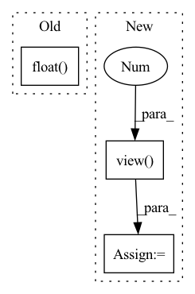

Pattern ID :294

Before Change
def forward(self, x, rois, roi_indices):
roi_indices = torch.Tensor(roi_indices).float()
rois = torch.Tensor(rois).float()
if x.is_cuda:
roi_indices = roi_indices.cuda()
rois = rois.cuda()
After Change
roi_cls_locs = self.cls_loc(fc7)
roi_scores = self.score(fc7)
roi_cls_locs = roi_cls_locs.view(n, -1, roi_cls_locs.size(1))
roi_scores = roi_scores.view(n, -1, roi_scores.size(1))
return roi_cls_locs, roi_scores
In pattern: SUPERPATTERN
Frequency: 3
Non-data size: 3
Instances
Fragment ID: 1236369
Project Name: bubbliiiing/faster-rcnn-pytorch
Commit Name: d456f02a402fd8cf8db1d991aa612439b3c0ffb2
Time: 2021-01-30
Author: 47347516+bubbliiiing@users.noreply.github.com
File Name: nets/classifier.py
M Class Name: VGG16RoIHead
N Class Name: VGG16RoIHead
M Method Name: forward(5)
N Method Name: forward(4)
M Parent Class: nn.Module
N Parent Class: nn.Module
M File Name: nets/classifier.py
N File Name: nets/classifier.py
M Start Line: 31
M End Line: 39
N Start Line: 33
N End Line: 59
'>
Before Change
self.roi = RoIPool( (self.roi_size, self.roi_size),self.spatial_scale)
def forward(self, x, rois, roi_indices):
roi_indices = torch.Tensor(roi_indices).float()
rois = torch.Tensor(rois).float()
if x.is_cuda:
roi_indices = roi_indices.cuda()
After Change
roi_cls_locs = self.cls_loc(fc7)
roi_scores = self.score(fc7)
roi_cls_locs = roi_cls_locs.view(n, -1, roi_cls_locs.size(1))
roi_scores = roi_scores.view(n, -1, roi_scores.size(1))
return roi_cls_locs, roi_scores
def normal_init(m, mean, stddev, truncated=False):
'>
Fragment ID: 1236374
Project Name: bubbliiiing/faster-rcnn-pytorch
Commit Name: d456f02a402fd8cf8db1d991aa612439b3c0ffb2
Time: 2021-01-30
Author: 47347516+bubbliiiing@users.noreply.github.com
File Name: nets/classifier.py
M Class Name: Resnet50RoIHead
N Class Name: Resnet50RoIHead
M Method Name: forward(5)
N Method Name: forward(4)
M Parent Class: nn.Module
N Parent Class: nn.Module
M File Name: nets/classifier.py
N File Name: nets/classifier.py
M Start Line: 68
M End Line: 77
N Start Line: 82
N End Line: 107
'>
Before Change
box_xy = (y[..., 0:2] * 2.0 - 0.5 + self.grid[i]) * self.stride[i]
box_wh = (y[..., 2:4] * 2) ** 2 * self.anchor_grid[i] // type: ignore
box_xyxy = self._xywh2xyxy(box_xy, box_wh).view(batch_size, -1, 4)
score = y[..., 4:].float().view(batch_size, -1, self.n_classes + 1)
preds.append(torch.cat([box_xyxy, score], -1))
if self.training:
After Change
-1,
)
else:
y = torch.cat((box_xy, box_wh, y[..., 4:]), -1).view(
batch_size, -1, self.n_outputs
)
preds.append(y)
if self.training:
'>
Fragment ID: 1236356
Project Name: jeikeilim/kindle
Commit Name: 2d2ca772f4563ecd77c3cd2ae5f34dfa5886b2f6
Time: 2021-10-09
Author: lim.jeikei@gmail.com
File Name: kindle/modules/yolo_head.py
M Class Name: YOLOHead
N Class Name: YOLOHead
M Method Name: forward(2)
N Method Name: forward(2)
M Parent Class: nn.Module
N Parent Class: nn.Module
M File Name: kindle/modules/yolo_head.py
N File Name: kindle/modules/yolo_head.py
M Start Line: 96
M End Line: 101
N Start Line: 107
N End Line: 122